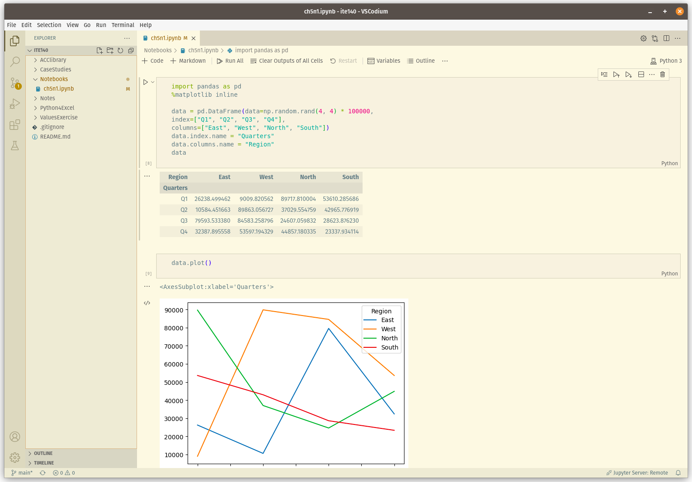

Overview
This week we will complete Chapter 7: Excel File Manipulation with pandas in our text.
As we discovered toward the end of last week, VSCodium (or if you prefer, the other version with the evil propriatary bits left in ;-) is a game changer for us. With apologies to Aaron for all his fine work, we won't need our Jyputer server after all.
The following screen shot shows the first plotting example from page 115 of
our text (Note: the example has numpy imported, but the
uses pandas. You need to fix that for the example to work):

Goals for Week 8
This week we will:
- Download the python-for-exel git repo.
- Complete as much of Chapter 7: Excel File Manipulation with pandas as our time (roughly 85 minutes times 4) this week allows.